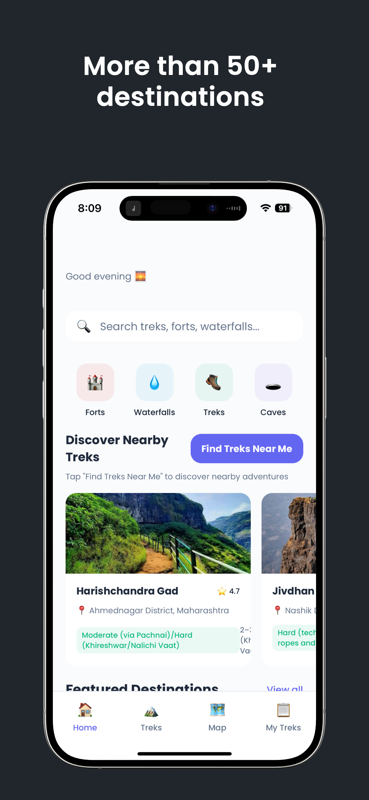
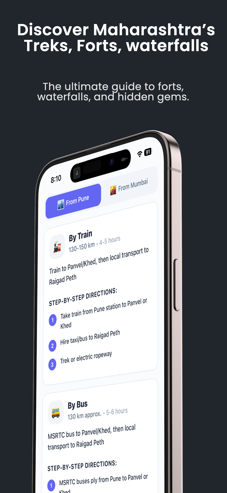
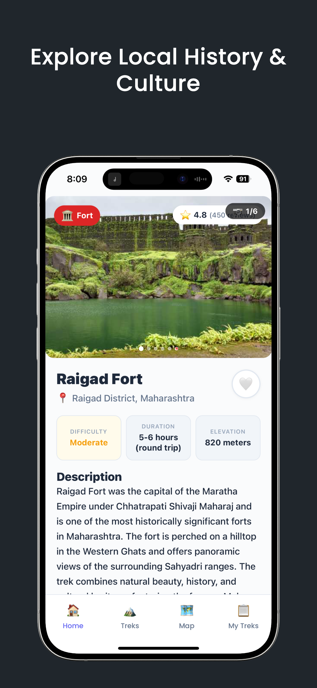
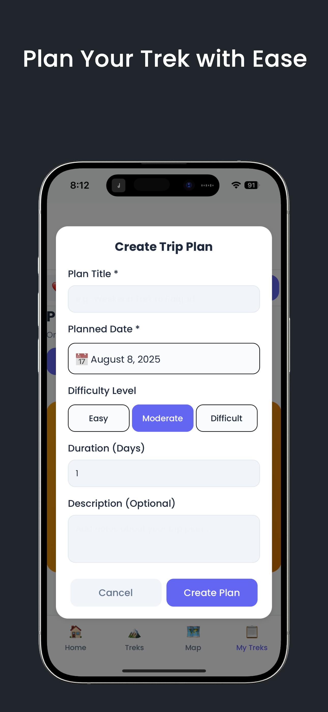

Plan safer, smarter treks across Maharashtra
All-in-one companion for forts, waterfalls, treks, and caves — with smart planning, weather safety, and emergency tools.
- Smart Trek Planner • Packing lists • Fitness prep
- Live Weather Safety • Emergency SOS • Fort guides
- Made for Maharashtra trekkers — beginners to experts

Core Functionality
Smart Trek Planner
Comprehensive packing lists, fitness preparation guides, and detailed route guidance tailored to your trek.
Weather Safety Assessment
Real-time weather analysis with clear safety recommendations and timely warnings before and during your trek.
Emergency SOS System
Quick access to emergency contacts (108, 100, 1363, 1926) and location sharing to alert your trusted contacts.
Detailed Fort Guides
In-depth guides for 15+ Maharashtra forts including Rajgad, Harishchandragad, and Alang — with routes, history, and tips.
Seasonal Recommendations
Monsoon, winter, and summer-specific guidance for each trek with safety advisories and route considerations.
Budget Planning Tools
Estimate transportation, accommodation, and food costs with flexible budgeting tools and local options.
Local Culture Guide
Essential Marathi phrases and cultural etiquette tips to help you trek respectfully and connect locally.
Safety First
Weather warnings
Multi-level warning system to help you decide when to trek and when to wait.
Emergency integration
Built-in emergency contacts and quick actions when every second counts.
Season-specific guidance
Monsoon, winter, and summer checklists and guidelines for each location.
Risk assessment
Condition-based risk tools to evaluate difficulty, exposure, and preparedness.
Trek Information
Difficulty & routes
Clear ratings and route breakdowns for each trek.
Water & food
Water source locations and food availability along the way.
Best seasons
Optimal times to visit with seasonal watchouts.
Photography & camping
Top photo spots and camping options with permissions.
App Screenshots



Frequently Asked Questions
Is Paiwat suitable for beginners?
Yes. Paiwat is built for both beginners and experienced trekkers with clear difficulty ratings, preparation guides, and safety tips.
Does Paiwat work offline?
Key information like packing lists and route notes can be accessed offline. Weather and live features need connectivity.
Which locations are covered?
15+ Maharashtra forts including Rajgad, Harishchandragad, Alang, and more — with ongoing updates.
How do I contact support?
Use the email below or the in‑app support. For emergencies, contact official services directly.
Support
Have questions or feedback? We’re here to help.
Email: nanket.dev@gmail.com
For emergencies during a trek, contact official services immediately:
- 108 — Medical
- 100 — Police
- 1363 — Tourism Helpline
- 1926 — Disaster Management